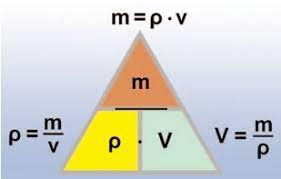

Η πυκνότητα είναι ανάλογη της μάζας, και αντιστρόφως ανάλογη του όγκου
Μπορείτε να υπολογίσετε οποιαδήποτε παράμετρο P, M ή V άν γνωρίζετε δύο εκ των τριών παραμέτρων. Χρησιμοποιήστε το αναδυόμενο μενού επιλογών "Υπολογισμός:" για να επιλέξετε την άγνωστη μεταβλητή. Τα πεδία με πράσινο χρώμα είναι τα πεδία των γνωστών μεταβλητών και ενεργοποιούνται ανάλογα με την επιλογή της άγνωστης μεταβλητής.
Τιμή της Πυκνότητας P (kg/m³)
Τιμή της Μάζας M (kg)
Τιμή του Όγκου V (V)